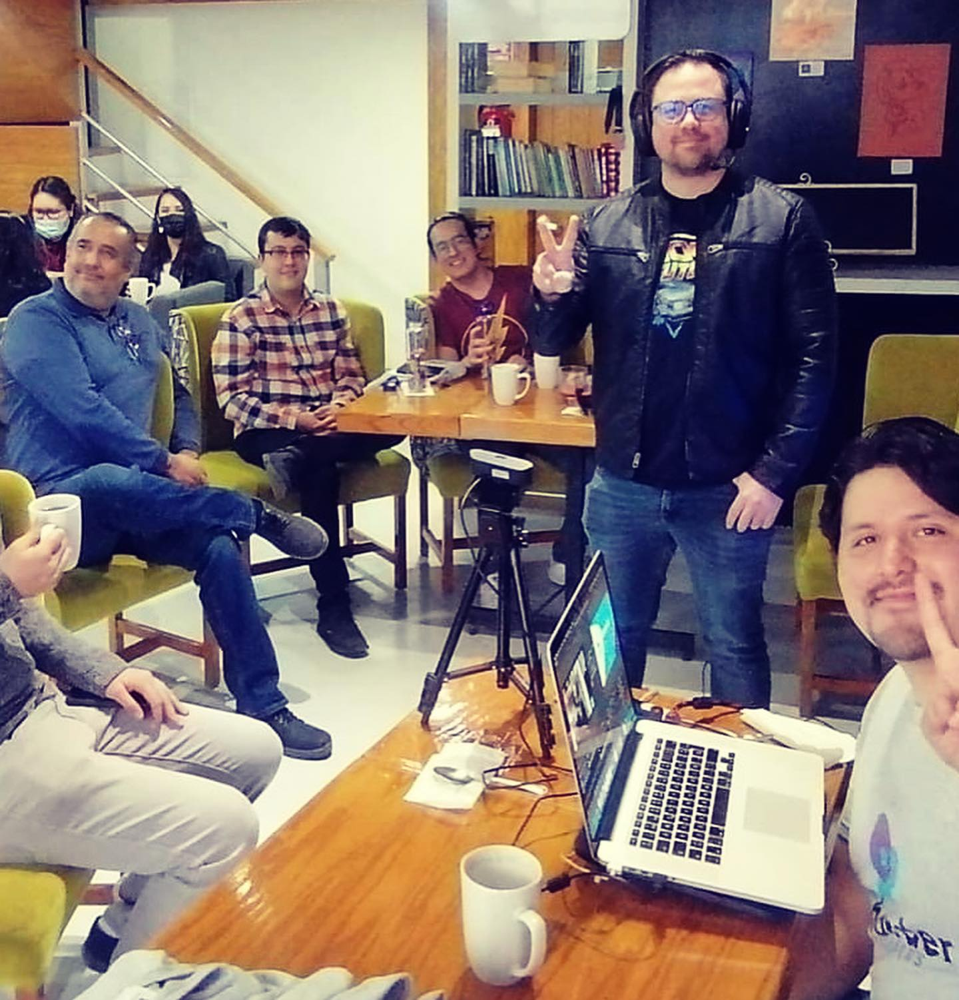

Episodio 2
Programación orientada a nada
Generando y compartiendo conocimiento para fortalecer al área del borderplex, México y otros países de habla hispana.
Generando y compartiendo conocimiento para fortalecer a México y otros países de habla hispana en materia de programación y tecnología desde el borderplex.
Analizamos las noticias más recientes del mundo tech, videojuegos y tendencias digitales desde la perspectiva de desarrolladores. Discusiones profundas, debates con conocimiento y pura pasión por el código.
Stream en vivo casi todos los viernes 19:00 MST por
youtube.
¡Suscríbete a nuestro canal para que no te los pierdas!
Generando y compartiendo conocimiento para fortalecer al área del borderplex, México y otros países de habla hispana.
Generando y compartiendo conocimiento para fortalecer al área del borderplex, México y otros países de habla hispana.
Encuentros presenciales y virtuales donde la comunidad se reúne para hablar de desarrollo, tecnología y experiencia real.

Somos una comunidad abierta de profesionales y entusiastas del desarrollo de software nacida en la región del Borderplex (Juárez, El Paso y Las Cruces). Tenemos un objetivo claro: descentralizar el conocimiento y demostrar que en la frontera se crea tecnología de clase mundial.
Buscamos fortalecer las habilidades técnicas y humanas de nuestros miembros a través de la colaboración. Creemos que el éxito no es un juego de suma cero; si uno crece, todos crecemos.
Tu dosis semanal de noticias de tecnología, cultura geek y debates sobre la industria. Análisis sin filtros transmitido en vivo.
Contenido educativo "evergreen" de alta calidad. Desde "Hola Mundo" hasta arquitecturas complejas, disponible gratis en nuestro canal.
El punto de reunión físico para hacer networking, compartir pizzas y escuchar charlas técnicas de expertos locales e invitados.
Fomentamos el Open Source y la mentoría. Conectamos talento junior con empresas y desarrolladores senior.